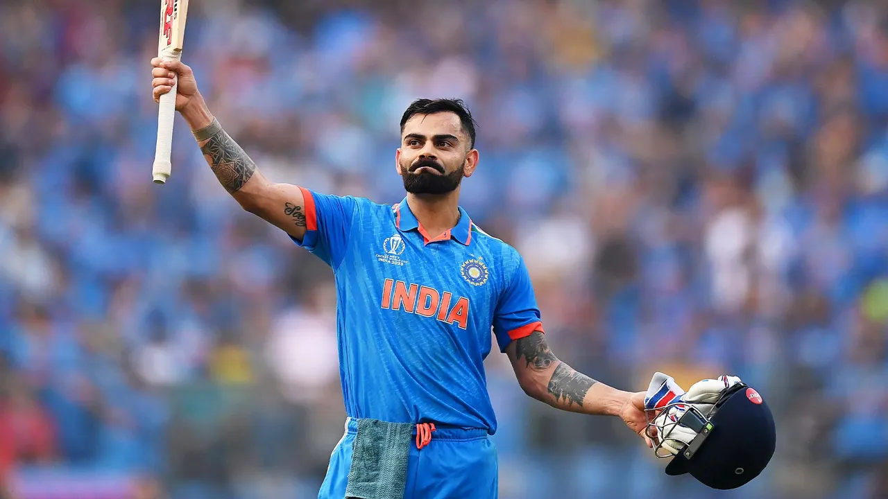

"Never give up. Today is hard, tomorrow will be worse, but the day after tomorrow will be sunshine."
Virat Kohli: A Cricketing Maestro Early Life and Background Virat Kohli was born on November 5, 1988, in Delhi, India. He hails from a Punjabi Hindu family. His father, Prem Kohli, was a criminal lawyer, and his mother, Saroj Kohli, is a homemaker. Virat has an elder brother, Vikas, and an elder sister, Bhavna. From a young age, Kohli exhibited a keen interest in cricket, and his family supported his passion. He joined the West Delhi Cricket Academy at the age of nine and trained under Rajkumar Sharma. Domestic Career Kohli's domestic career began with the Delhi Under-15 team in the 2002-03 Polly Umrigar Trophy, where he emerged as the highest run-scorer for his team. His performances earned him a place in the Delhi Under-17 team for the 2003-04 Vijay Merchant Trophy, which they won. In 2006, he made his debut in first-class cricket for Delhi against Tamil Nadu. His resilience and determination shone through when he played a crucial innings of 90 runs against Karnataka on the day after his father's death, choosing to play to honor his father's memory. International Career ODI Debut and Rise (2008 - 2011) Kohli's international debut came in August 2008, in an ODI against Sri Lanka. His early years in international cricket were marked by inconsistency, but he gradually cemented his place in the Indian team. The turning point came during the 2011 ICC Cricket World Cup, where Kohli played a vital role in India's victorious campaign, including scoring a century in the tournament's opening match. Test Debut and Captaincy (2011 - Present) Kohli made his Test debut against the West Indies in 2011. His aggressive style and remarkable skill earned him accolades and a spot as one of India's key batsmen. In December 2014, he was appointed the captain of the Indian Test team, succeeding MS Dhoni. Under his leadership, India achieved the number one ranking in Test cricket and recorded memorable series wins, including against Australia and England. Achievements and Records Kohli is renowned for his consistency, chasing prowess, and record-breaking performances. Some of his notable achievements include: Fastest player to reach 8,000, 9,000, 10,000, 11,000, and 12,000 runs in ODIs. First player to score four double centuries in four consecutive Test series. Most centuries in run-chases in ODIs. Leading India to its first Test series win in Australia in 2018-19. Playing Style and Technique Kohli is known for his aggressive batting style, strong technique, and fitness regime. He excels in chasing targets and is particularly effective in limited-overs formats. His cover drive is widely regarded as one of the most graceful shots in modern cricket. Personal Life In December 2017, Virat Kohli married Bollywood actress Anushka Sharma in a private ceremony in Italy. The couple welcomed their first child, a daughter named Vamika, in January 2021. Kohli's dedication to fitness and a healthy lifestyle has made him a role model for aspiring athletes. He follows a strict diet and fitness regime, which has contributed to his longevity and performance on the field. Philanthropy and Business Ventures Beyond cricket, Kohli is involved in various philanthropic activities. He established the Virat Kohli Foundation (VKF) to support underprivileged children and athletes. Kohli also has business interests, including co-owning the Indian Super League (ISL) football club FC Goa and launching his fashion brand, Wrogn.